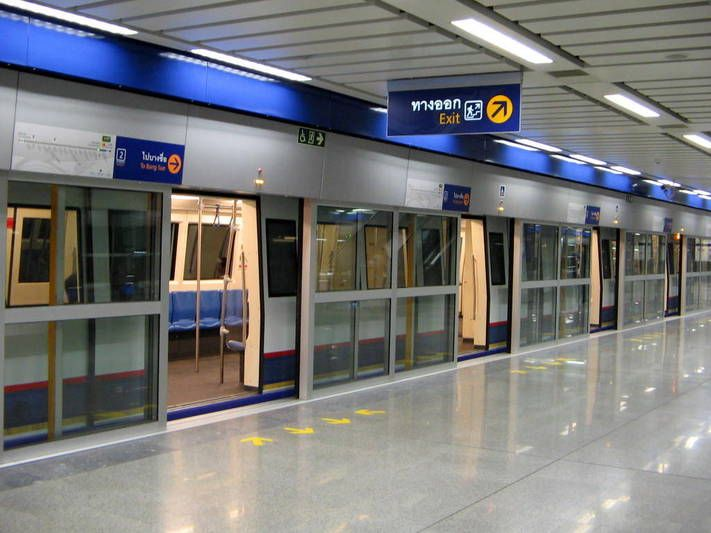

BTS Skytrain

The BTS Skytrain is a fast and efficient way to travel around Bangkok, especially during rush hours.
MRT Subway
The MRT Subway is another great option for avoiding traffic and reaching various parts of the city.
Chao Phraya Express Boat

The Chao Phraya Express Boat is a scenic way to travel along the river and reach historical sites.
Tuk Tuks

Tuk Tuks are a fun and iconic way to get around, though they can be more expensive than other options.
Taxis

Taxis are widely available but can get stuck in traffic. Make sure to ask the driver to use the meter 11.
Types of Visas in Thailand
1. Tourist Visa (TR)
Allows visitors to stay for up to 60 days for tourism purposes.
2. Non-Immigrant Visa (B)
Suitable for business, work, or investment, permitting a stay of up to 90 days.
3. Education Visa (ED)
Valid for up to one year for students.
4. Marriage Visa (O)
Allows you to stay for up to one year if you are married to a Thai national.
5. Retirement Visa (O-A)
Valid for one year for retirees.
6. Elite Visa
Offers various options for long-term stays, providing flexibility for those who wish to stay longer.
7.Permanent Residency
For those looking to stay indefinitely.
8. Long-Term Resident Visa (LTR)
Available for those seeking residency for up to 10 years.